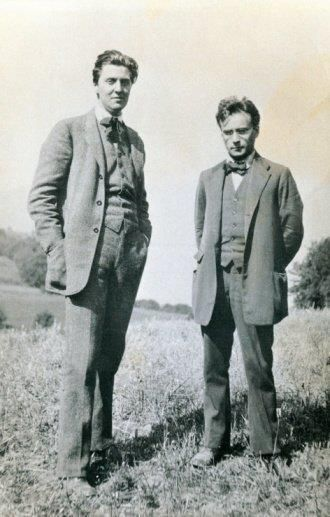

Segunda Escuela de Viena
Se conoce como Segunda Escuela de Viena al grupo de compositores que, nucleados alrededor de Arnold Schönberg, empezaron a aplicar la técnica dodecafónica y desarrollaron y extendieron su uso hasta mediados del siglo XX. Entre ellos se destacan los compositores Anton Webern y Alban Berg, quienes produjeron una gran cantidad de obras aplicando los procedimientos dodecafónicos. Si bien la técnica fue ampliamente criticada durante los primeros años de su aplicación por sus aparentes limitaciones armónicas, la creación del sistema fue determinante para el desarrollo de la música académica occidental en el siglo XX. La idea de utilizar series o matrices numéricas para determinar parámetros musicales fue recuperada durante la posguerra por los compositores Olivier Messiaen y Pierre Boulez, quienes utilizaron este sistema para crear obras dentro del lenguaje conocido como serialismo integral.

Alban Berg y Anton Webern, discípulos de Schönberg (Foto: Alban Berg Stiftung)